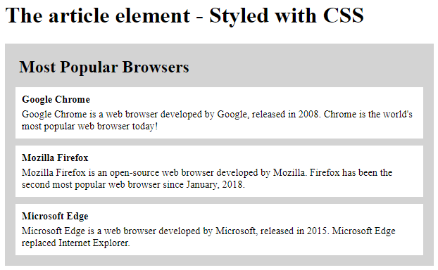
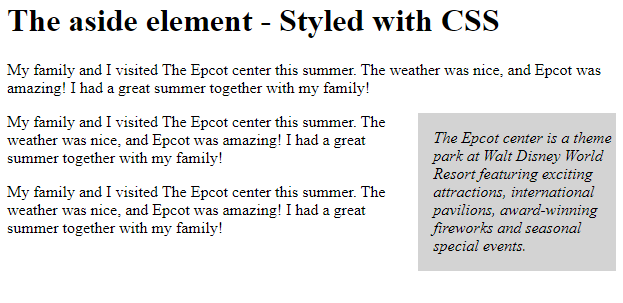

SS teaches you the skills you need to thrive and earn online - now and in the future.
এস এস এর উপরে আমরা যদি মাউস পয়েন্টার টা নেই তবে এস এস এর পূর্ণরূপ দেখা যাবে। কোন সংক্ষিপ্ত শব্দের পূর্ণরূপ বোঝাবার জন্যই abbr element ব্যবহার করা হয়। (p,h1,h2,h3,ul,li,u,br,strong,abbr,b,hr)
The article element
The 'article' specifies independent, self-contained content.
আর্টিকেল একটি সিমেন্টিক এলিমেন্ট যেটা এসইও ফ্রেন্ডলি এবং এই এলিমেন্টে সিএসএস ব্যবহার করে কনটেন্টকে সহজে
দৃষ্টিনন্দন করে তোলা যায়।
 (p,h1,h2,h3,ul,li,u,br,strong,article,b,img,hr)
The aside element
The 'aside' defines some content aside from the content it is placed in. The aside content should be indirectly related to the surrounding content.
অ্যাসাইড একটি সিমেন্টিক এলিমেন্ট যেটা এসইও ফ্রেন্ডলি এবং এই এলিমেন্টে সিএসএস ব্যবহার করে কনটেন্টকে সহজে
পাশে নোট আকারে উল্লেখ করা যায়।
 (p,h1,h2,h3,ul,li,u,br,strong,aside,b,img,hr)
The audio element
The 'audio' is used to embed sound content in a document, such as music or other audio streams.
অডিও একটি সিমেন্টিক এলিমেন্ট যেটা এসইও ফ্রেন্ডলি এবং এর মাধ্যমে ডকুমেন্টে অডিও ফাইল সংযুক্ত করা যায়।